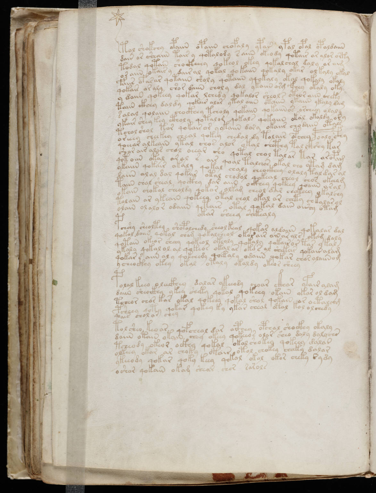

f58v
1tol shokchy opaiin opaiin chofaly ypar ypal opal opaldaiin2dair or sheaiin tair y qotalody saiin okeody qotair ar alor orky3todal qotain sho ckheey qokeol okey qokalchal daly ar aim4or aiin okair y dairal qokal qokaiin qokaly okar olkaly okal5faiir ofaror qotaiin sholy qotaiin yqokaly okal qokaly okaly6qokair or aly shor daiin choly dal ykaiin org fchey okaly oky7y daiin qokeey qokar lchedy qokalor sheols oteor aiin cheky8taiin ckhey daldy qokair alar ytal aiin otaiin ykaiin ykaly dam9salal qolaiin chockhey tcholy qokaiin qokaiinos orcheey olaly10ykair shey key ctholy qotalom qokal qokaiin okal okaldy ory11tcholshol tor qokairor y ykaiin dory okaiir chodaiin otals12oreeey cheekey cheal qokey chedal dy tolair opchey poaly cfhy13qoeear alkeain ytal chor alor okal chcthy tal ckshy kar14shar air alos chol oeear sho qotal chol talar tar ar opam15qotoiin otal aral s air qoal talchos okal cho ytam dam16ykaiin qokair okaly qokal chaly cheockhey olaly taldar al17daiin alal dal qokiir otal chodol qokeal cheol chos okeeam18taiin chal sheal qockhy dar aiin ockhey qokeey qoaiin aral19okair chokal cheoldy qokor olkam cheol dar chokeey okalchy20tolain ar ykeain qokeey otal chol okal ar chety chkalar ol21olain olalor odaiin qotais otal qokal dair oishy otam22okar sheey shekealy23pchshy sheoltey shopolchedy sheolkeal qokar aldaiin qokalar dal24qokal daiin qokal cham qokalcheol okorair ainarals okom daly25qotain okeor sheey qokeol okeoly qokaly qokairor tas ykal26ykaly qokal ol ar qokeos okalar okos al shekar qokair alam27qokar s aiin al y qokchedy qoekaly odaiin qokar chos alaiin om28ycheo ckhy okey okal otaly okaldy okeor sheey29polal keeo oleeckhey dalar ykeeody choar ckhar yfair ylam30daiin sheoikhy ykey sheky qokal qokeey okain okar ol dam31tcheor chor kar okal qokeey qotal shol qokain ar oetalchg32psheey qoty qokar qokey ky ykar cheal otal kol olchedy33qoais chol ar chey34tolsheo keoar qofcheol dar aiphey opchal shockhy okaly35daiin otain okain chhy okeey qokeeos olar sheo daly dalychs36tcheody okeor ockhy qokal okal shokey qokeey dalas37olkeey okar ar choky otair otol chokey cheeky dalar38ykeeody qokar qoky keey qokol okol okor cheky sydy39oshor qokain okam shear sher sarols
